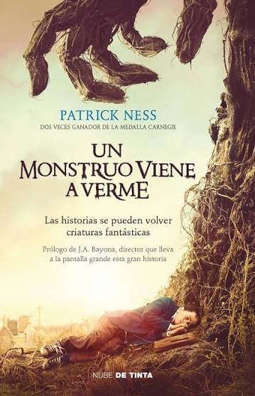

|
 |
Un monstruo viene a vermepor Patrick Ness SINOPSISUn monstruo viene a verme, de Patrick Ness, es una historia conmovedora que explora el dolor, el miedo y la dificultad de aceptar la realidad. La novela sigue a Conor, un niño que recibe la visita de un monstruo que, a través de historias y confesiones, lo acompaña a enfrentar sus emociones y una verdad que le cuesta aceptar. Con una narrativa sensible y profunda, nos recuerda que incluso los sentimientos más difíciles necesitan ser escuchados. |
10/10
Duelo, familia, miedo, pérdida, fantasía, emociones, aceptación y esperanza